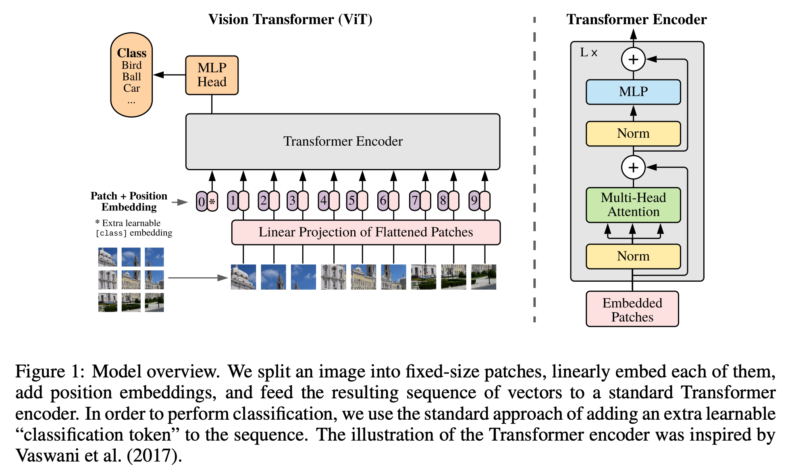
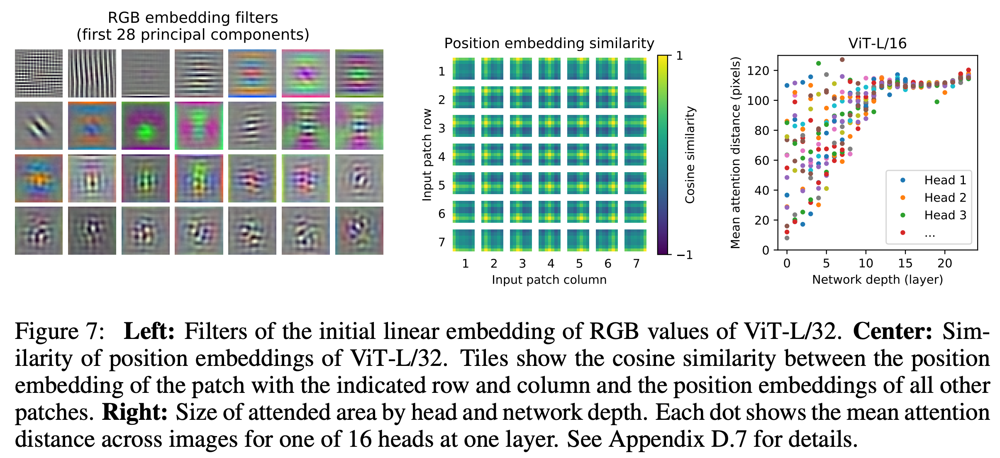
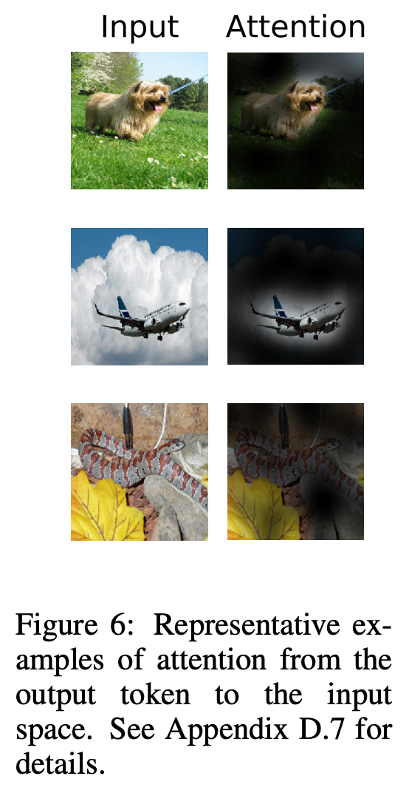

2 2020 ViT: Vision Transformer
3 METHOD
- We apply a standard Transformer directly to images, with the fewest possible modifications.
- We split an image into patches and provide the sequence of linear embeddings of these patches as an input to a Transformer.
- Image patches are treated the same way as tokens (words) in an NLP application.
- We train the model on image classification in supervised fashion.
3.1 VISION TRANSFORMER (VIT)

-
To handle 2D images, we reshape the image \(x \in R^{H \times W \times C}\) into a sequence of flattened 2D patches \(x_p \in R^{N \times P^2 C}\), where \((H, W)\) is the resolution of the original image, \(C\) is the number of channels, \((P, P)\) is the resolution of each image patch, and \(N = H W / P^2\) is the resulting number of patches, which also serves as the effective input sequence length for the Transformer.
-
The Transformer uses constant latent vector size \(D\) through all of its layers, so we flatten the patches and map to \(D\) dimensions with a trainable linear projection (Eq. 1). We refer to the output of this projection as the patch embeddings.
-
Similar to BERT’s [class] token, we prepend a learnable embedding to the sequence of embedded patches \((z_0^0 = x_\text{class})\), whose state at the output of the Transformer encoder \((z_L^0)\) serves as the image representation \(y\) (Eq. 4). Both during pre-training and fine-tuning, a classification head is attached to \(z_L^0\). The classification head is implemented by a MLP with one hidden layer at pre-training time and by a single linear layer at fine-tuning time.
-
Position embeddings are added to the patch embeddings to retain positional information. We use standard learnable 1D position embeddings, since we have not observed significant performance gains from using more advanced 2D-aware position embeddings (Appendix D.4). The resulting sequence of embedding vectors serves as input to the encoder. The position embeddings at initialization time carry no information about the 2D positions of the patches and all spatial relations between the patches have to be learned from scratch.
-
The Transformer encoder (Vaswani et al., 2017) consists of alternating layers of multi-headed self-attention (MSA, see Appendix A) and MLP blocks (Eq. 2, 3).
- Layernorm (LN) is applied before every block,
- and residual connections after every block (Wang et al., 2019; Baevski & Auli, 2019).
- The MLP contains two layers with a GELU non-linearity.

